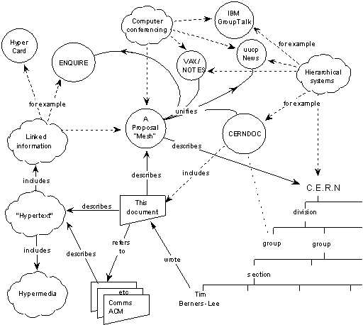

Introduction & History
Digital Publication Platforms
Content Strategy 2021
Eric Eggert
Introduction
- Eric Eggert
- Students
- This Course
Eric Eggert (he/him/his)

- Co-founder & Co-owner of outline Consulting üá©üá™ (2010)
- Director of Accessibility Services at Knowbility üá∫üá∏ (2016)
- Lecturer at FH Joanneum üá¶üáπ (2015)
üìç Wissen, Germany üá©üá™
Who are you?
- What do you do when you’re not here?
- What is one fun/
special/ interesting fact about you that you’d like us to know? - Where do you live?
Digital Publication Platforms?
This course will give you everything you need to make informed decisions about where and how to publish content.
Course Structure
| Date | Time | Lesson |
|---|---|---|
| 2021-10-28 | 19:00 | L1: Introduction & History |
| 2021-11-02* | 19:00 | L2: HTML, CSS, & the Semantic Web |
| 2021-11-11 | 19:00 | L3: Accessibility Principles |
| 2021-11-18 | 19:00 | L4: Online Publication Models |
| 2021-11-23* | 19:00 | L5: Publishing Content Across Technologies & Devices |
| 2021-11-27** | 09:00 | L6: Face to Face Lecture in Graz üá¶üáπ |
* Tuesday, ** Saturday
Grading
The course is graded as follows:
- Default grade of “2” if you attend all lectures, complete all reading, and complete both assignments.
- Advanced grade of “1” you will need to contact the instructor for one extracurricular assignment.
- Otherwise, you will receive an unsatisfactory grade.
Assignments
- Watch a talk and write a blog post about it.
- Create a custom web “business card” for yourself.
Sign up for GitHub
History
Digital Publication Platforms
Content Strategy 2021
Eric Eggert
A short history of hypertext and the web

Picture: Darin Wortlehock 2007, Flickr, Some Rights Reserved.
Hypermedia is defined by the presence of application control information embedded within, or as a layer above, the presentation of information.
Architectural Styles and the Design of Network-based Software Architectures by Roy T. Fielding
Distributed hypermedia allows the presentation and control information to be stored at remote locations.
Architectural Styles and the Design of Network-based Software Architectures by Roy T. Fielding
The Concept of Linked Information

Bild: Wikimedia Commons This image is a work of the United States Department of the Treasury, taken or made as part of an employee’s official duties. As a work of the U.S. federal government, the image is in the public domain in the United States.
Memex
Consider a future device … in which an individual stores all his books, records, and communications, and which is mechanized so that it may be consulted with exceeding speed and flexibility. It is an enlarged intimate supplement to his memory.
The Atlantic, July 1945: As We May Think
All this is conventional, except for the projection forward of present-day mechanisms and gadgetry. It affords an immediate step, however, to associative indexing, the basic idea of which is a provision whereby any item may be caused at will to select immediately and automatically another. … The process of tying two items together is the important thing.
The Atlantic, July 1945: As We May Think
The hope is that, in not too many years, human brains and computing machines will be coupled together very tightly, and that the resulting partnership will think as no human brain has ever thought and process data in a way not approached by the information-handling machines we know today.
Man-Computer Symbiosis by J.C.R. Licklider

Bild: Gisle Hannemyr, Wikimedia Foundation. This file is licensed under the Creative Commons Attribution-Share Alike 3.0 Unported license.
Ted Nelson
- Invention of the term “Hypertext”
- Computers used to implement hypertext
- Xanadu as a hypertext system
Let me introduce the word ‘hypertext’ to mean a body of written or pictorial material interconnected in such a complex way that it could not conveniently be presented or represented on paper. It may contain summaries, or maps of its contents and their interrelations; it may contain annotations, additions and footnotes from scholars who have examined it.
Ted Nelson


{kind=link}
{kind=link}
Mother of All Demos
(1968)
MoAD: The Hardware
MoAD: Collaboration
Hypercard
Hypercard Features
- Hypertext system on personal computers
- Linking of images
- Search
HyTime
- Early standard for hypermedia systems
- Time based hypermedia
What is hypermedia? Hypermedia is the union of two information processing technologies: hypertext and multimedia. Hypertext information is accessed in more than one order. Multimedia information is communicated by more than one means.
C.F. Goldfarb (1991)
WWW
The World Wide Web
Information Management: A Proposal
- Internet as implementation of hypertext
- HTML as markup language for hypertext
- URLs for addressing resources
- HTTP as protocol for universal hypermedia
Client-Server Architecture
Early Browsers
“WWW”

A screenshot of the first web browser, developed by Tim Berners-Lee on a NeXT computer, which was itself called ‘WWW’ (Image: CERN)
Mosaic

A screenshot of the first web browser, developed by Tim Berners-Lee on a NeXT computer, which was itself called ‘WWW’ (Image: CERN)
The Architecture of the Web

Source: Fielding Dissertation: CHAPTER 5: Representational State Transfer (REST)
The key abstraction of information in REST is a resource. Any information that can be named can be a resource: a document or image, a temporal service (e.g. ‘today’s weather in Los Angeles’), a collection of other resources, a non-virtual object (e.g. a person), and so on.
In other words, any concept that might be the target of an author’s hypertext reference must fit within the definition of a resource. A resource is a conceptual mapping to a set of entities, not the entity that corresponds to the mapping at any particular point in time.
The Browser Wars

Picture: Wikimedia Commons. Rights: Creative Commons — Attribution-ShareAlike 3.0 Unported — CC BY-SA 3.0
{kind=link}
Web Standards & the W3C
Links in native apps
Linked Data
Linked Data is about using the Web to connect related data that wasn’t previously linked, or using the Web to lower the barriers to linking data currently linked using other methods.
More specifically, Wikipedia defines Linked Data as ‘a term used to describe a recommended best practice for exposing, sharing, and connecting pieces of data, information, and knowledge on the Semantic Web using URIs and RDF.’
Tom Heath, Linked Data - Connect Distributed Data across the Web
Example: Linked Jazz